Grutterij Molen de Hoop
Oud-Zevenaar, meel
Een ambachtelijke molen die al sinds 1852 een familiebezit is; sinds 2014 runnen Frits en Maaike het molenbedrijf. Zij maken de pannenkoekenmix die speciaal voor De Zon is samengesteld.
Weemstraat 5, Wehl
Vers gemaakt met lokale ingrediënten van regionale ondernemers. Meel van de molen, melk van de boer, eieren uit Didam. En sinds 2025 ook een bistrokaart.
Woensdag t/m vrijdag 16:00 - 20:00, zaterdag en zondag 12:00 - 20:00
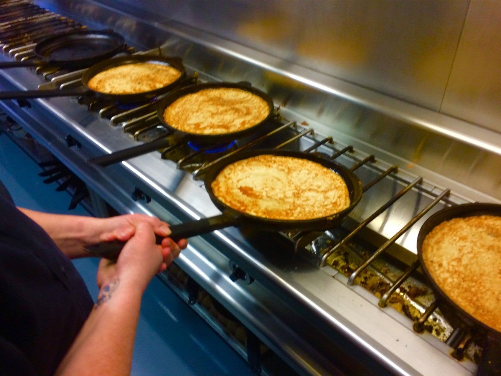
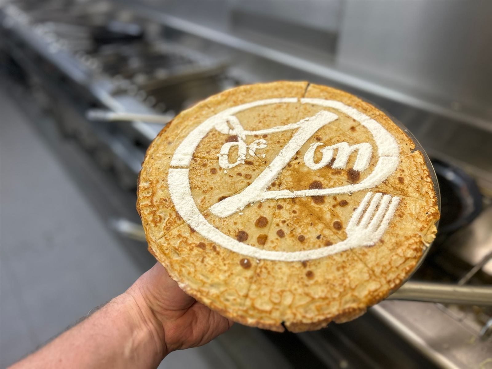
Pannenkoekenhuis de Zon aan de Weemstraat 5 in Wehl heeft ruim 250 zitplaatsen, binnen en buiten. De voorzijde van het restaurant is voor gasten die niet met kleine kinderen komen. De achterzijde is ingericht voor gezinnen mét kleine kinderen: daar heeft u goed zicht op uw kind(eren) en op het terras, dat deels overdekt is.
We bakken al ruim 12 jaar onze pannenkoeken in de pan, op speciale pannenkoekgasfornuizen. Begin 2025 kwam daar een bistrokaart bij: rib-eye van Vleesboerderij Dieker, malse schnitzels, gamba's, huisgemaakte stoofpotjes en voorgerechten als carpaccio en quiche. Warme hoofdgerechten komen met warme groente, gebakken aardappeltjes en het saladebuffet.
Lid van de Vereniging van Erkende Pannenkoekenrestaurants, de brancheorganisatie voor pannenkoekenhuizen met meer dan 85 leden. De Zon is ook een erkend leerbedrijf voor mbo-studenten (leerplekken vind je op stagemarkt.nl).
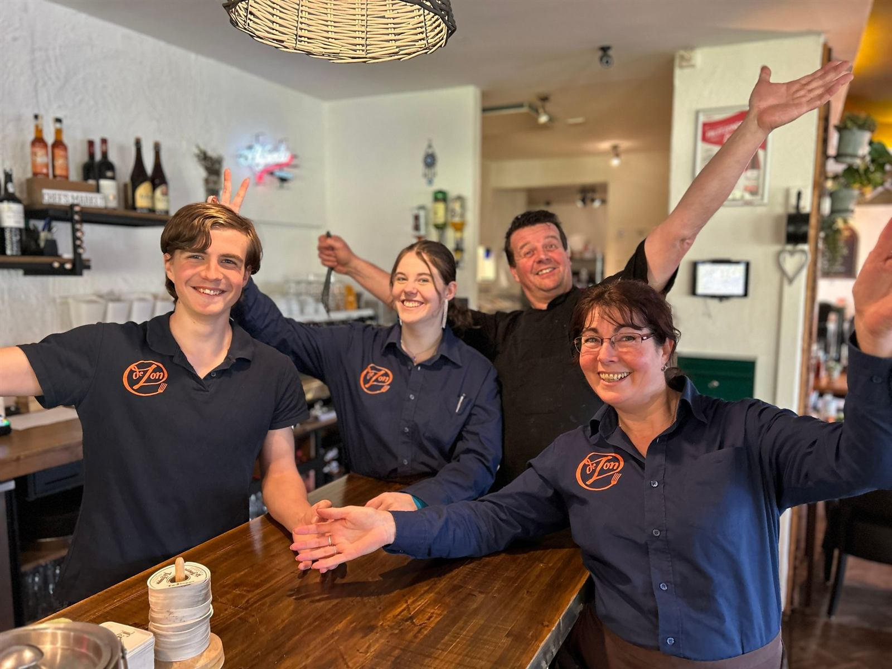
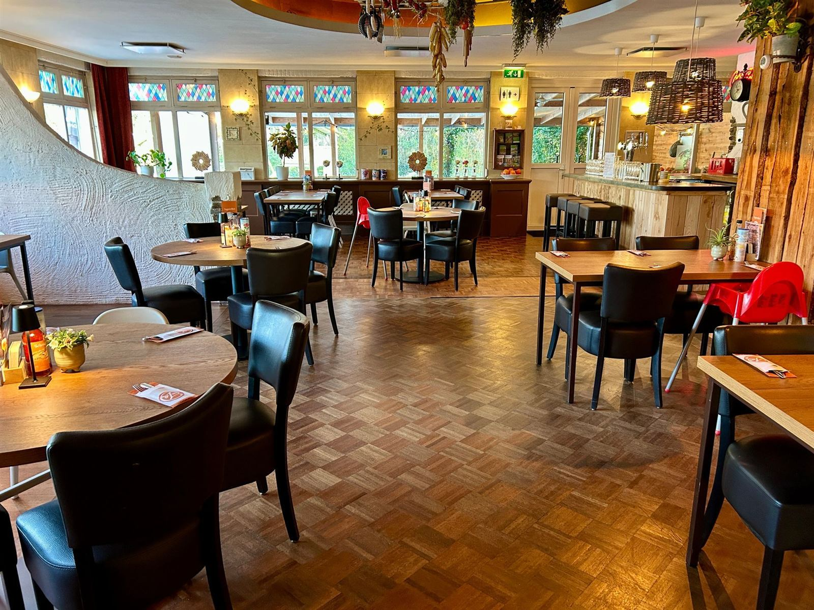
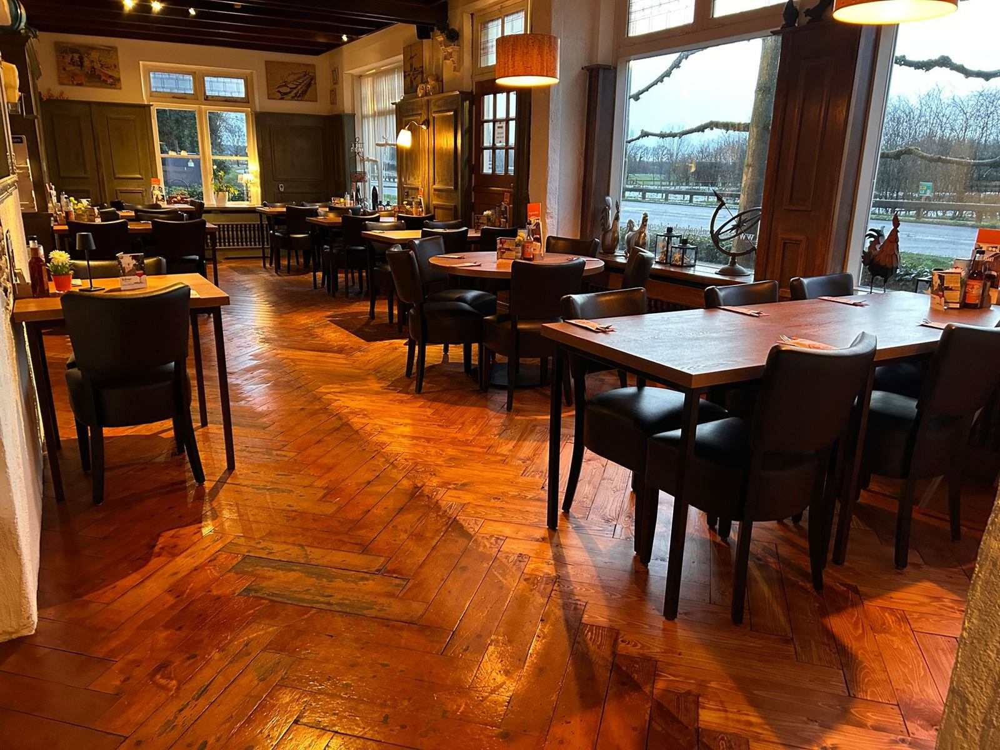
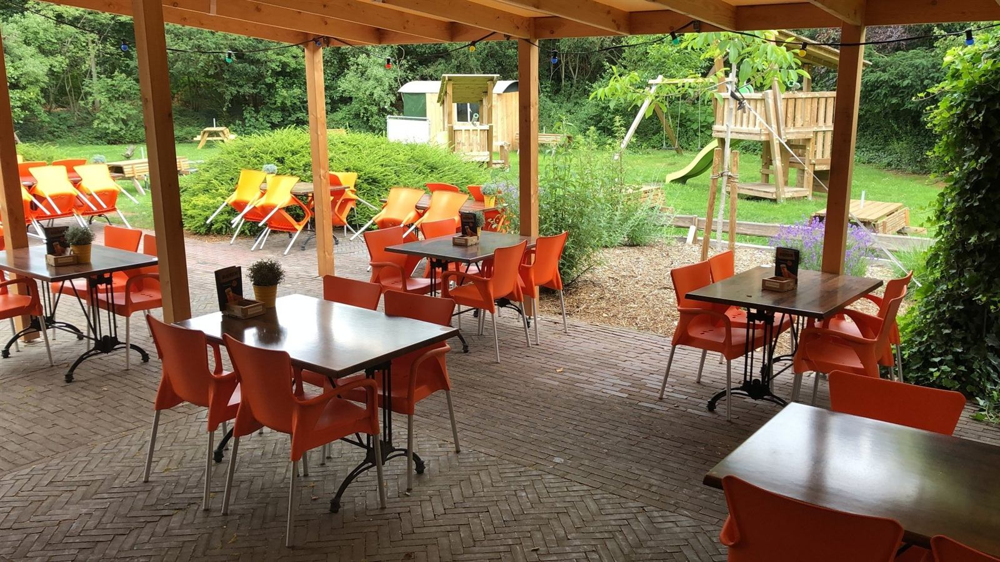
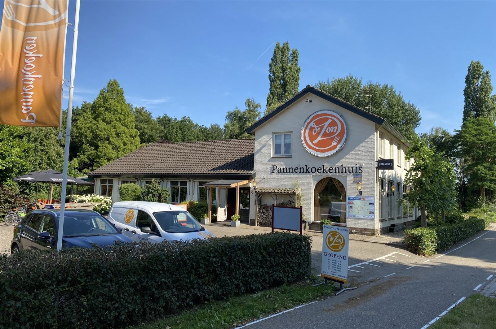
De Zon werkt met lokale ingrediënten van regionale ondernemers die dezelfde passie voor het product hebben. Dat komt de smaak alleen maar ten goede.
Oud-Zevenaar, meel
Een ambachtelijke molen die al sinds 1852 een familiebezit is; sinds 2014 runnen Frits en Maaike het molenbedrijf. Zij maken de pannenkoekenmix die speciaal voor De Zon is samengesteld.
Laag-Keppel, melk
Verse melk van de familie Siebers: een melkveebedrijf met 90 melkkoeien en 30 stuks jongvee, die van circa april t/m september in de weilanden rond de stal grazen. Ook onze ijskoffie komt hiervandaan. Zuivel kopen kan op de boerderij, Eldrikseweg 10, Laag-Keppel.
Didam, eieren
Eieren van scharrelkippen, pal aan de A12. Door de metershoge glazen wanden van de stal ziet u de kippen vanaf de weg. Verse eieren koopt u er in de eierenautomaat.
Wehl, brood
Samen met Bram ontwikkelden we onze breekbroodjes en het mini Juwehltje. Mooie ingrediënten, veel geduld en liefde voor het vak.
Etten, rundvlees
Het rundvlees voor de bistrokaart, zoals de rib-eye van Blonde d'Aquitaine runderen en het stoofpotje, komt van deze Achterhoekse vleesboerderij.
Doetinchem, ijs
Ons schepijs is van Luigi: (h)eerlijk roomijs van de lokale ijsmeester De Hartog uit Doetinchem.
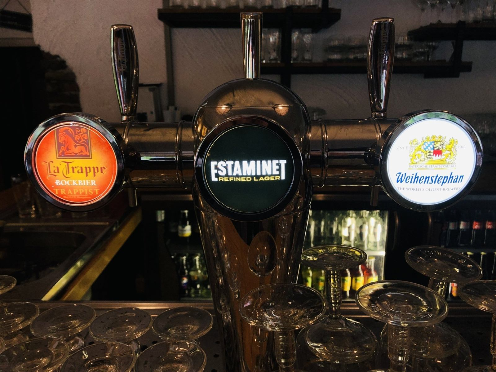
Estaminet is ons pils van de tap: een Belgische premium pils van Brouwerij Palm in Steenhuffel, voor het eerst gebrouwen in 2008. Zacht water, zomergerst, Saaz-hop en zes volle weken rijping.
La Trappe is het enige echte trappistenbier van Nederland, sinds 1884 gebrouwen bij de abdij Onze Lieve Vrouw van Koningshoeven in Berkel-Enschot. We hebben nagenoeg alle soorten, wisselend per seizoen ook een aantal op de tap.
In de tuin van zo'n 1500 m² gras staat een grote, omheinde speeltuin: glijbanen, schommels, trampolines, klim- en klautertoestellen, een voetbalveldje, grote en kleine springkussens (op droge en windvrije dagen), een wip-wap, een duikelrekstok en een speelhuis als pannenkoekenschool en -keuken. En natuurlijk genoeg ruimte om te rennen, springen en handstanden te doen.
Binnen zijn er twee speelplekken met een tv met tekenfilms, een kinderbioscoop, en aan tafel kleurplaten en kleurtjes. Op het tuinterras staan picknickbanken op unieke plekjes.
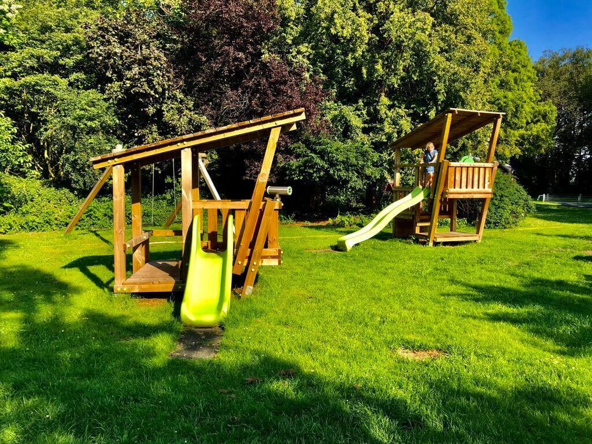
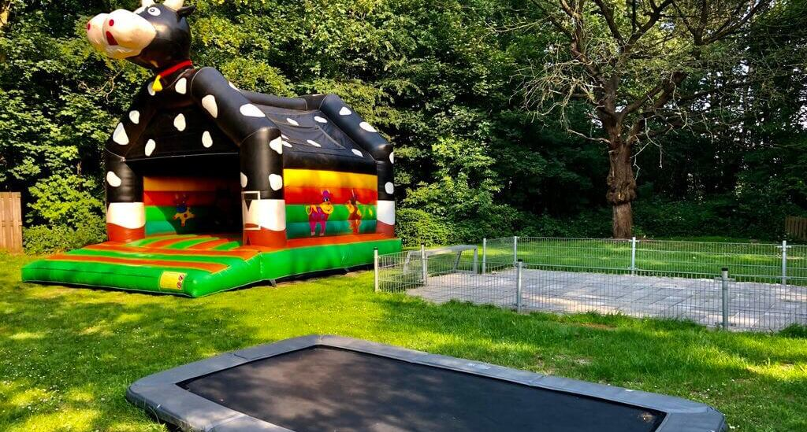
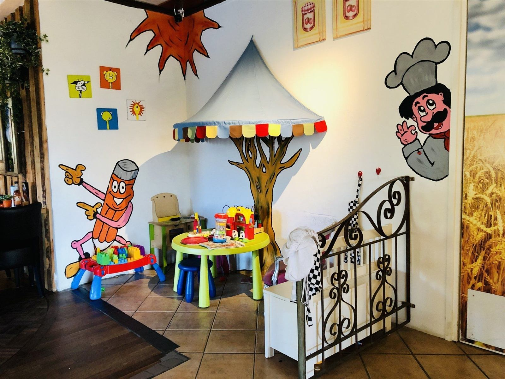
Huwelijk, verjaardag of bedrijfsfeest: De Zon ligt centraal, dicht bij de A18 (afrit 2), met een groot eigen parkeerterrein. Van brunch tot avondfeest is veel mogelijk, en op elke variant is een persoonlijke aanvulling mogelijk. We maken graag een afspraak met u voor een kop koffie.
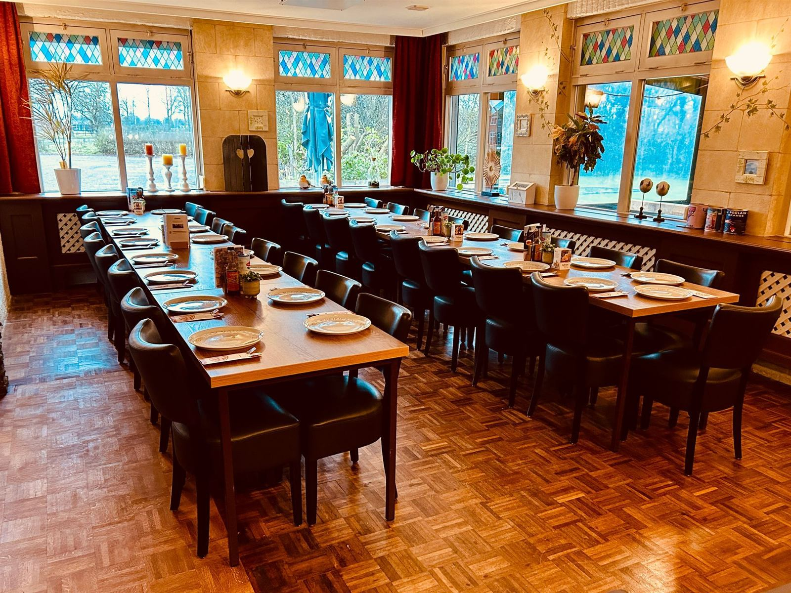
Voor velen al een traditie. Voorgesneden pannenkoeken komen doorlopend en onbeperkt op schalen op tafel: eerst de hartige, langzaam richting de zoetere, ook vegetarisch. De selectie is naar wens aan te passen. Tot slot een feestdessert: ijstaarten met warme kersen, bosvruchten, chocoladesaus en slagroom.
Vanaf 16 volwassenen, incl. dessert. Kinderen van 3 t/m 10 jaar bestellen een eigen pannenkoek van de kaart.
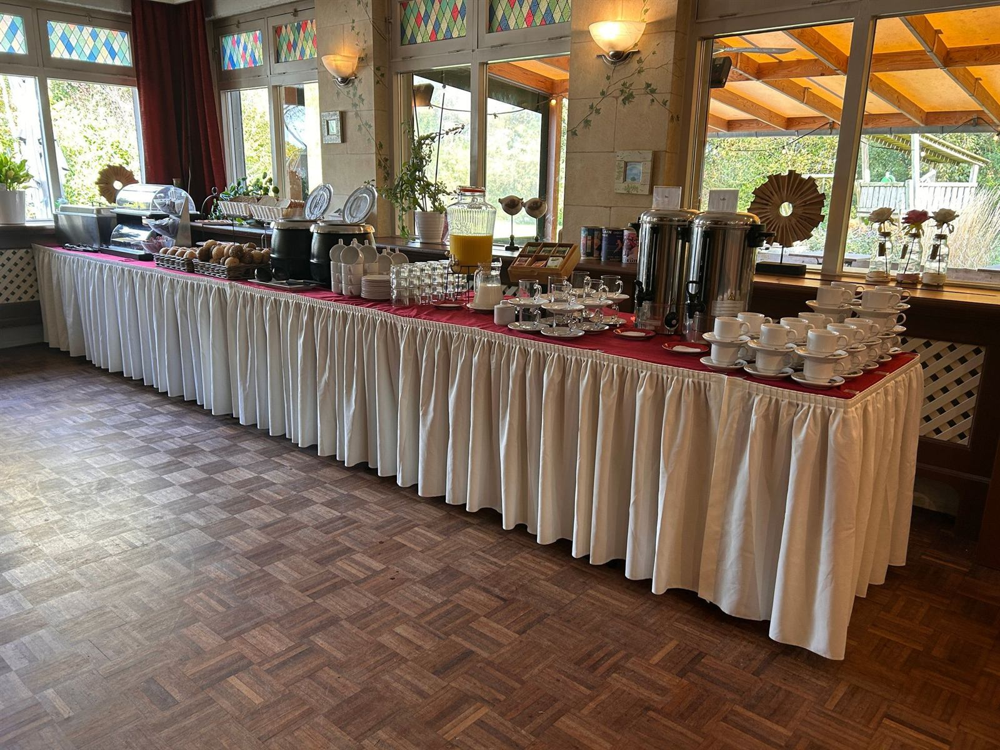
Een uitgebreid koud en warm brunchbuffet, inclusief pannenkoeken, op de verhoging achterin het restaurant. Langere tafels of meer kleine zitjes; bij mooi weer ook het terras en de speeltuin. Van 11.30 tot ongeveer 14.30 uur, met een deel van het restaurant exclusief voor uw gezelschap.
Vanaf 25 volwassenen. Kinderen van 4 t/m 10 jaar 50% korting.
Keuze uit 2 soorten huisgemaakte soepen, verse broden van Bakker Bram uit Wehl, bladerdeeg (croissants, chocobroodjes), mini Deense patisserie, breekbrood, stokbroodjes, vleeswaren (salami, ham, gerookte kip), kazen (brie, jonge en oude kaas), minimaal 6 soorten zoet beleg, salades (huisgemaakte rauwkost, rundvleessalade, eiersalade), gerookte zalmfilet, verse fruitsalade, ham met meloen.
Warm: pannenkoeken op bestelling aan tafel, roerei, uitgebakken spek, gekookte eitjes, gemarineerde kippendij, Achterhoekse gehaktballetjes in de jus, huisgemaakte champignonragout met bieslook (vegetarisch), kroketten en frikandellen, verse frietjes, 2 soorten huisgemaakte quiche (waarvan 1 vegetarisch).
Zoet: klein gebak zoals soesjes en petit fours, chocolademousse, tulband bavarois, zelf Brusselse wafels bakken, warme kersen, slagroom en sausjes, vanille-ijs en waterijsjes.
Drinken: onbeperkt koffie en thee, sinaasappelsap, multisap, ranja.
Met Pasen organiseren we een feestelijke Paasbrunch op eerste en tweede paasdag (vanaf 11.30/12.00 uur). Vooraf reserveren is nodig; vanaf 15.00 uur zijn we weer open voor de gewone kaart.
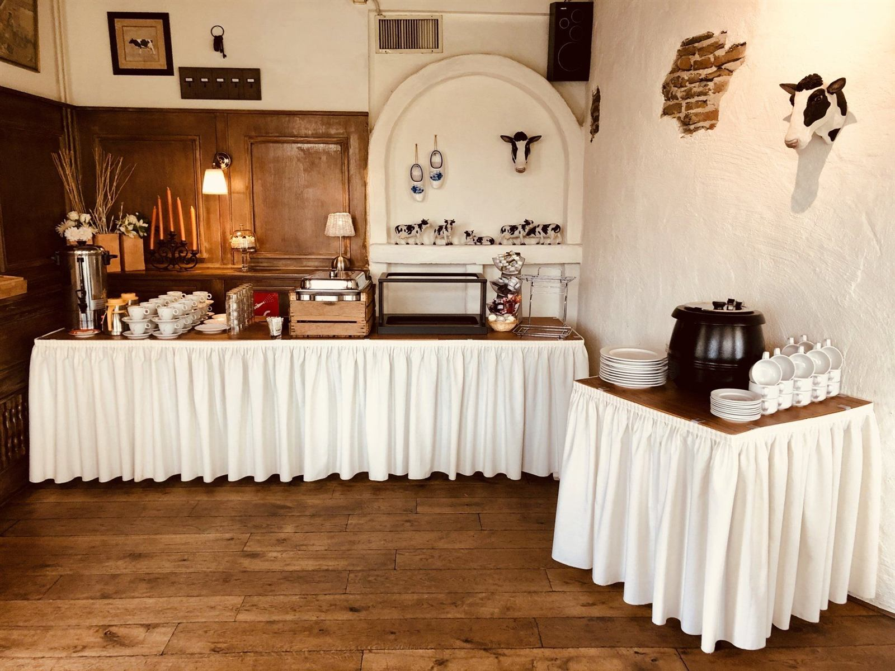
Ongedwongen genieten in een ontspannen sfeer. Onze koks bereiden alles dagvers. U kiest op het basisbuffet zelf uw hoofdgerechten, bijgerechten en extra voor- en nagerechten. Aanvang mogelijk vanaf 17.00 uur (doorgaans 18.00 uur), koffie ter afsluiting rond 20.30/21.00 uur.
Vanaf 25 volwassenen. Kinderen van 4 t/m 10 jaar 11,75. Het basisbuffet is altijd minimaal het opgegeven aantal personen; extra keuzes minimaal de helft van het aantal volwassen gasten.
Basis: 2 soorten verse soep (tomatensoep en dagsoep), bakkersbreekbroodjes/stokbrood met kruidenboter en knoflooksaus. Saladebuffet met huisgemaakte rauwkost, pastasalade met pesto en kaas, gebraden rosbiefsalade, ham met meloen, tomaten met mozzarella, komkommersalade, mesclun met ijsbergsla en dressings, luxe vleessalade. Warm: pannenkoeken op bestelling aan tafel, dunne frieten, gebakken aardappels. Erbij appelmoes, frietsaus, ketchup, mosterd. Na: ijstaarten op schaal, warme kersen, slagroom, mini dessertgebak, chocolade- en aardbeienmousse, zelf Brusselse wafels bakken.
Andere opties en uitbreidingen zijn in overleg mogelijk.
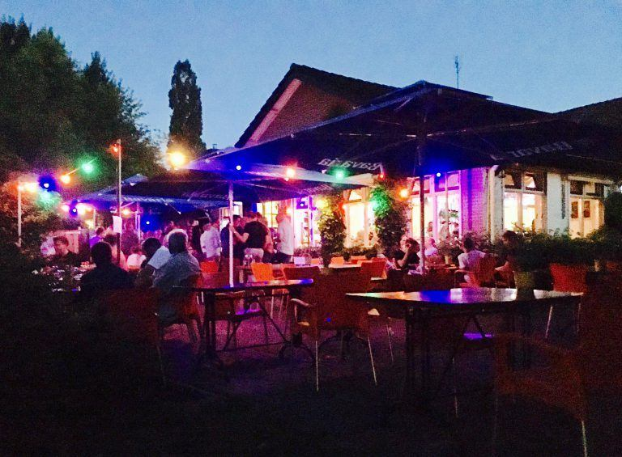
Voor uw bruiloft, verjaardag of jubileum: de achterzijde van het restaurant bij de bar en het verwarmde, overdekte terras. Onze keukenbrigade maakt luxe hapjes, van de tap komen heerlijke biertjes en er zijn goede wijnen. We adviseren u graag over DJ's of live muzikanten.
Donderdag-, vrijdag- en zaterdagavond van 20.30 tot 00.30 uur, vanaf 50 volwassenen. Prijs inclusief drank en hapjes.
Drankenarrangement: de meest voorkomende frisdranken, Estaminet van de tap (Grolsch, Bavaria, Gulpener, Veltins, La Trappe Puur of Swinckels in overleg tegen meerprijs), radler, alcoholvrij bier, huiswijnen (rood, wit, zoete witte en rosé), vruchtensappen en mineraalwaters, binnenlands gedistilleerd en Malibu, Safari, Passoa en rum. Uitbreiding in overleg.
Hapjesarrangement: luxe opgemaakte koude hapjes (2 p.p.) en warme hapjes zoals Achterhoekse bitterballen (2 p.p.). Afsluiten met een broodje warme beenham of puntzak friet: meerprijs 3,75 p.p.
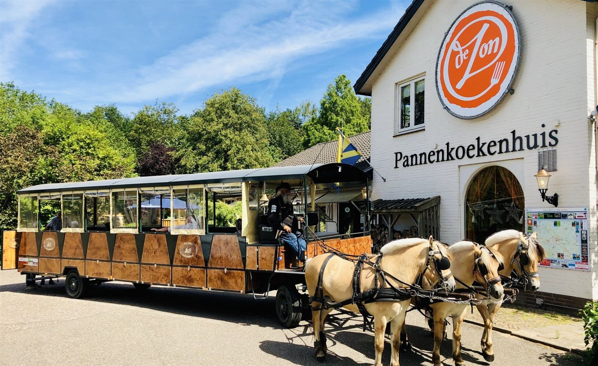
We ontvangen u in het restaurant of op het terras. Daarna stapt uw gezelschap in de huifkar voor een toertocht van ongeveer een uur door de omgeving, met drankjes mee. Terug wacht een gedekte tafel met de pannenkoekenproeverij en een feestdessert.
Proeverij vanaf 16 volwassenen (onbeperkt pannenkoeken en ijsdessert). Huifwagen vanaf € 110,- (tot 16 pers.), paardentram vanaf € 115,- (tot 30 pers., ook in te richten voor een rolstoel). Koffie, thee en drankjes op nacalculatie.
Uit te breiden met ontvangst met Wehlse krentenwegge van de warme bakker (meerprijs € 3,15) of na terugkomst een kop huisgemaakte soep of ander voorgerecht. Met meer personen kunt u meerdere rijtuigen reserveren. Kinderen kunnen ook een eigen pannenkoek van de kaart bestellen.
Stalhouderij Belfjor rijdt niet met de paarden boven de 30 graden, voor het dierenwelzijn. Bij zo'n annulering door de stalhouder bent u De Zon op dat moment niets verschuldigd; verplaatsen van de reservering stellen we zeer op prijs.
Lunch met een gezelschap van meer dan 25 personen op woensdag, donderdag of vrijdag vanaf 12.00 uur? Bel ons even op 0314 700515, dan overleggen we de mogelijkheden. Prijswijzigingen voorbehouden.
Heeft u of een van uw gasten een allergie of dieet? Meld het ons vooraf, het liefst bij het uitreiken van de menukaart. Dan kunnen we de nodige voorbereidingen treffen. Daar waar het kan proberen we altijd iets voor u te betekenen, in overleg; niet alles kan zo even 1, 2, 3. Houd bij allergie- en dieetpannenkoeken rekening met een langere bereidingstijd.
Bistrogerechten zijn niet à la minute glutenvrij te bestellen, wel als we uw keuze minimaal 1 dag vooraf hebben ontvangen. Eet u glutenvrij uit gewoonte en niet vanwege coeliakie? Laat het ons vooraf weten, dan hoeven we minder strikt te zijn.
Bij coeliakie hebben we een aparte menukaart met keuzes zonder risico op kruisbesmetting. Toeslag 2,50 per pannenkoek (op de glutenvrije kaart al meegerekend).
Eigenlijk is alles mogelijk; we maken het beslag à la minute. Toeslag 1 euro per pannenkoek.
Ook hier is eigenlijk alles mogelijk. Toeslag 1 euro per pannenkoek.
Niet mogelijk bij ons: omdat we in de pan bakken kunnen we geen topresultaat garanderen.
Ja. U kunt uw favoriete pannenkoeken telefonisch bestellen op 0314 700515 en bij ons afhalen. Bezorgen aan huis doen we helaas niet.
Ja, het restaurant, het terras en de faciliteiten zijn volledig rolstoeltoegankelijk: brede doorgangen, een aangepast mindervalidentoilet en rolstoelvriendelijke parkeerplaatsen op eigen terrein.
We hebben 130 zitplaatsen binnen en 130 buiten, deels overdekt, en zijn goed uitgerust voor grote groepen, familiedagen, bedrijfsuitjes en verjaardagen. Zie groepen en feesten.
Ja, binnen hebben we een kinderbioscoop met leuke films en twee speelplekken met tv. Zo kunt u rustig natafelen.
Ja. Bij een bistrohoofdgerecht stelt u zelf uw salades en rauwkost samen aan het verse saladebuffet. Warme hoofdgerechten komen met warme seizoensgroente en gebakken aardappeltjes.
We hebben altijd keuze uit twee soorten huisgemaakte soep, waarvan er standaard één vegetarisch is.
Zeker: er is een ruime keuze aan vegetarische pannenkoeken, en vegetarische hoofdgerechten zijn in overleg mogelijk. Geef specifieke wensen of allergieën (zoals noten of pinda) door bij uw reservering of aan de bediening.
Geef bij uw reservering het volledige aantal gasten door, ook baby's (ook in kinderwagens), jonge kinderen en of er iemand een rolstoel gebruikt. Zo stemmen we de tafelindeling goed af. De Zon is een gezellig drukke zaak; soms vragen we u, ook met reservering, om even geduld voordat u aan tafel kunt.
Inclusief kinderen? Bel ons op 0314 700515 (liefst wo t/m zo tussen 12.00 en 16.30 uur) of mail naar bediening@pannenkoekenhuisdezon.nl. Uw reservering is definitief na bevestiging.
Terrastafels reserveren we niet: niet elke terrastafel is direct de beste plek, denk aan de zon en de wind. Vraag bij binnenkomst gerust of er plek is. Tip: kom op tijd, rond 16.00 uur is het vaak iets minder druk dan om 18.00 uur.
| Maandag | Gesloten |
|---|---|
| Dinsdag | Gesloten |
| Woensdag | 16:00 - 20:00 |
| Donderdag | 16:00 - 20:00 |
| Vrijdag | 16:00 - 20:00 |
| Zaterdag | 12:00 - 20:00 |
| Zondag | 12:00 - 20:00 |
Maandag en dinsdag gesloten, behalve met Pasen en Pinksteren. Uitgezonderd feestdagen en grotere gezelschappen op reservering.
0314 700515
info@pannenkoekenhuisdezon.nl
Goed bereikbaar vanaf de A18, afrit Wehl/Kilder, richting Wehl. Aan beide zijden van het restaurant ligt een groot eigen, gratis parkeerterrein. De ingang is bij de vlaggenmasten; het terras is een beetje verstopt aan de achterzijde in de tuin.
Binnen hebben we de luxe van veel ruimte, dus de tafels staan ruim. Het terras aan de achterzijde is grotendeels overdekt, dus ook op regenachtige dagen is er buiten plek.
Een laagdrempelig bedrijf zonder strakke hiërarchie: van eigenaar tot afwashulp werkt iedereen met dezelfde instelling en passie. We hebben veel lol samen, en de focus is er als het moet. We zijn maandag en dinsdag gesloten (m.u.v. Pasen en Pinksteren); pieken zijn in het weekend en de zomer, vooral op zondag.
Je bent een belangrijke schakel tussen de wijklopers, bar en keuken, en samen met je collega verantwoordelijk voor jouw wijk en gasten. Een aanpakker die graag in een team werkt en blij wordt van blije gezichten.
Je helpt de koks met hand- en spandiensten: voorbereiden voor de avond, pannenkoeken afgarneren, ijsjes maken.
We bieden minimaal 1 werkdienst per week van minstens 4 uur, meer in overleg. Altijd volgens de laatste Horeca-cao, loon stipt per 4 weken, all-in uurloon incl. vakantiedagen en 8% vakantiegeld. We leiden intern op. Solliciteren: stuur je brief met cv naar werken@pannenkoekenhuisdezon.nl.